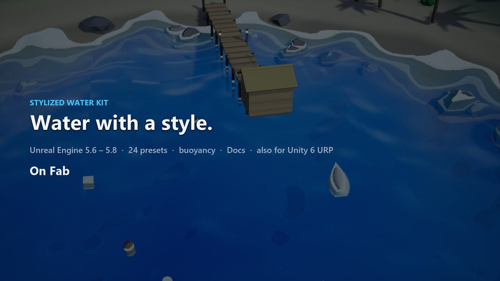

Stylized Water Kit
Stylized water that looks good out of the box: 24 presets from anime lakes to PSX retro, toon foam, caustics and waves that objects really float on. One draw call, no project setup.

Quick start (Unreal Engine)
Unreal Engine 5.6, 5.7, 5.8
- Copy
StylizedWaterKitinto<YourProject>/Plugins/and restart the editor. The plugin enables Procedural Mesh Component. - Drag Stylized Water Body into the level. It shows the
MI_SWK_ToonBandspreset right away; set Size. - Pick another look: set Material to any of the 24 presets in Plugins > Stylized Water Kit Content > Presets (
MI_SWK_TropicalLagoon,MI_SWK_PSXRetro...). To make your own, duplicate a preset and edit its parameters. - For floating objects: drag Stylized Water Floating Actor into the level and pick its mesh (it needs simple collision). Or give your own actor a physics-simulating root and add Water Buoyancy.
- The water follows the level's sun: the Sun property, else the atmosphere sun light, else the brightest directional light. A Sky Light adds the sky colour and reflections.
Blueprint: Set Water Material (switch presets at runtime), Get Water Height At, Get Water Normal At, Is Underwater, Find Water Body.
Demo: Plugins > Stylized Water Kit Content > Demo > Maps: L_SWK_Cove_Day and L_SWK_Cove_Night, a stylized island
cove with a pier, a boat and floating props. Console: SWK.Preset TropicalLagoon (or any preset name) switches every water
body; SWK.DebugView 1..5 shows sun light, depth, opacity, sky ambient and sky reflection.
The master material is M_SWK_Water (plugin content). Its shading code is in the plugin's Shaders/Private/SWK_Water.ush.
Unity 6 (URP)
- Package Manager > + > Add package from disk, then pick
com.alicemedia.stylizedwater/package.json. - Nothing to set in the URP asset: the water asks URP for the depth and opaque textures it needs by itself.
- Add Stylized Water > Water Body to an empty GameObject. It uses the package's default material; set a preset id (for example
tropical-lagoon) and the size. - For your own material: create one with the shader Alice Media/Stylized Water and assign it to Material.
- For floating objects: add Water Buoyancy next to a Rigidbody.
Presets
toon-bands, anime-lake, tropical-lagoon, mountain-lake, pond, river, ocean-calm, ocean-storm, swamp, arctic, toxic, lava, bioluminescent, psx-retro, pixel, painterly, ink, candy, deep-abyss, shallow-reef, oil, mud, ice-melt, blood-moon. They are defined once in presets.json (meters, sRGB colors) and used by both engines.
Performance
Each water body costs: - one mesh with one material, so one draw call; - no tessellation, no render targets, no extra passes.
Waves are four Gerstner waves in the vertex shader. Resolution sets the vertex count (96 × 96 cells by default), so lower it for small ponds.
UEFN (planned)
UEFN has no Custom HLSL node, so the UEFN version will be a node-only material with the same parameters and presets. Buoyancy is not included (Verse cannot read the material waves). It will be built and tested in UEFN, which is not installed yet.
Changelog
Unity 1.0.1
Fixed: - With a URP renderer whose Depth Texture Mode is After Transparents (or with the depth texture off), the water got no scene depth and rendered as deep water everywhere, without shallows or shore foam. The water now asks URP for the depth and opaque textures itself, so no URP asset setting is needed.
1.0.0 (first release, Unreal Engine 5.6, 5.7, 5.8 and Unity 6 URP)
- One shading core for both engines (
SWK_Water.ush/.hlsl), with: - four Gerstner waves, detail ripples;
- depth-based color and clarity;
- shore foam, toon foam lines and crest foam;
- caustics, toon lighting with bands, specular and sparkles, fresnel;
- underwater fog that darkens with depth;
- posterize with dithering, vertex snapping and pixelation for retro looks.
- 24 presets shared by both engines, from Toon Bands and Tropical Lagoon to PSX Retro, Pixel, Ink, Lava and Blood Moon.
- Water body:
- a grid surface with one draw call;
- CPU wave queries that match the GPU: height, normal, is underwater, find the water body at a location.
- Buoyancy: sample points that follow the waves, with drag; objects settle and bob.
- No setup: a new water body shows water right away; no project settings, collision channels or engine Water plugin.
- Unreal: master material and preset instances ship in the plugin content.
- Unity: URP shader with depth, refraction and fog; the default material ships in the package.
- Lighting from the level: the sun (or moon) colour and direction, the Sky Light from above and the sky reflected at grazing angles; colours keep their look under any sun intensity and exposure.
- Floating Actor: a drop-in physics mesh with buoyancy.
- Emission Pattern: glow everywhere (lava) or only in foam, glints and caustics (bioluminescence).
- Demo maps: a stylized island cove by day and by night.
- Runtime: Set Water Material, console
SWK.Preset <Name>, debug viewsSWK.DebugView.
Third-party content
None. All code, the shading core, the master material and its 24 presets (generated by our script from presets.json) the icon and the demo cove (meshes made procedurally in Blender by our script, flat-colour materials, procedural sky) are original work by Alice Media. The demo sky dome uses the engine's basic sphere mesh. No textures are used: every pattern is procedural. The Unreal plugin uses only engine modules and the engine's Procedural Mesh Component plugin; the Unity package uses only URP.
No AI-generated content (images, sounds, voice) is included in the product.
Support
Questions, bugs and ideas: https://github.com/alicemedia-cmyk/alice-media-docs/issues. Please include your engine version and the Stylized Water Kit version (1.0.0).